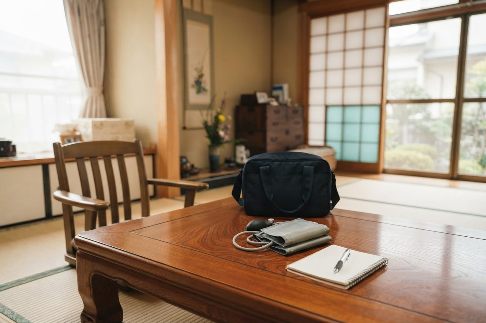

いなだ医院の訪問看護は、どこまで来てもらえますか？
A. 回答いなだ医院では、訪問看護と訪問リハビリテーションを行っています。対応している地域は倉敷市です。看護師がご自宅にうかがい、健康状態の確認、医療的な処置、療養のご相談をお受けします。24時間連絡できる体制をとっており、急な体調の変化があったときにもご相談いただけます。訪問診療を受けている方は、同じ医院の看護師がうかがうため、情報が一つにまとまるという利点があります。

行っているサービス
- 訪問看護／介護予防訪問看護：健康状態の観察、医療的な処置、服薬の管理、療養に関するご相談
- 訪問リハビリテーション／介護予防訪問リハビリテーション：ご自宅での生活動作にあわせたリハビリテーション
- 居宅療養管理指導／介護予防居宅療養管理指導：医師がご自宅にうかがい、療養上の管理と指導を行います
胃ろうの管理、喀痰の吸引、在宅酸素、点滴、褥瘡（床ずれ）の処置など、医療的なケアが必要な方への対応も行っています。
対応している地域と時間
| 項目 | 内容 |
|---|---|
| 所在地 | 〒713-8123 岡山県倉敷市玉島柏島920-106 |
| 電話 | 086-525-0600 |
| 通常の実施地域 | 倉敷市 |
| 営業日 | 平日・土曜（日曜・祝日、8月14日・15日、1月1日〜3日はお休み。12月31日は午前のみ） |
| 営業時間 | 平日 7時00分〜18時30分／土曜 7時00分〜17時30分 |
| 24時間の対応 | あり（電話でのご相談、急な体調の変化への対応） |
| 職員 | 看護師・准看護師が担当しています |
介護保険と医療保険のどちらになりますか
訪問看護は、要介護・要支援の認定を受けている方は原則として介護保険での利用になります。認定を受けていない方や、国が定める特定の疾病にあてはまる方、症状が重く医師が必要と判断した場合などは、医療保険での利用になります。どちらになるかはご本人の状況によって決まりますので、主治医またはケアマネジャーにご確認ください。
訪問診療とあわせて利用できます
いなだ医院では訪問診療も行っています。医師と看護師が同じ医院に所属しているため、診療で把握した内容がそのまま訪問看護に伝わります。夜間に状態が変わったときの連絡先が一つで済むことも、ご家族の負担を減らすことにつながります。通院が難しくなってきた段階でのご相談もお受けしています。
ご相談・お問い合わせ
ご利用にはケアマネジャーとの調整や、主治医の指示書が必要になります。手続きについてもご案内しますので、まずはお電話ください。
- いなだ医院：086-525-0600
本ページは一般的な情報提供を目的としています。掲載している定員・営業日・費用などは、公表されている事業所情報をもとにしたもので、最新の内容と異なる場合があります。ご利用にあたっては必ず重要事項説明書をご確認ください。ご不明な点はお電話（086-525-0600）にてお問い合わせください。
訪問看護のご相談、手続きのご案内をお受けしています。
最終更新：2026年8月26日